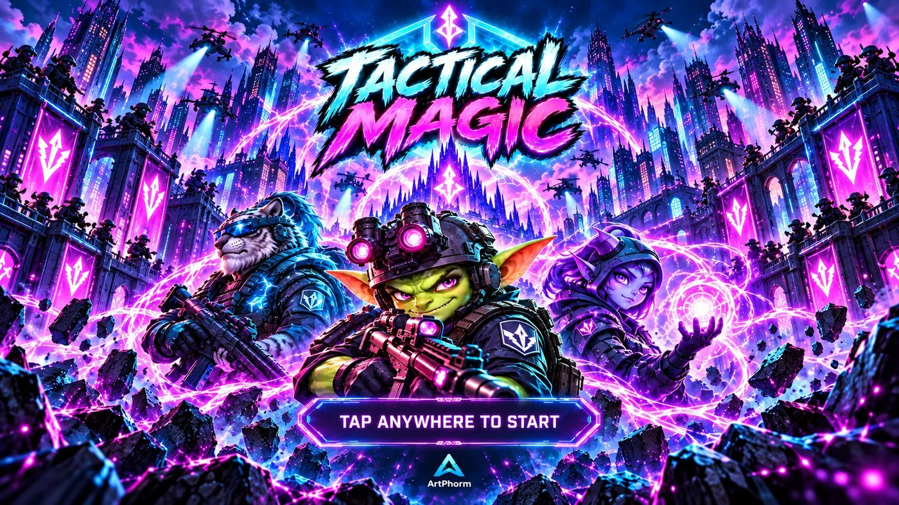

Suit up. Spell up. Breach.

A tilt-shift toy war
2049. A warhead under the Ural Mountains cracked the planet's Ley-lines wide open, and magic came back. WyrmCorp, run by a dragon in a very nice suit, is bottling it. Task Force Arcane is going to un-bottle it.
- Pick one of four designer-vinyl operators: an Orc Juggernaut, an Elven Recon sniper, a Gnome Sapper or a Paladin Pointman.
- Fast, zero-drag twin-stick controls: a big FIRE button with auto-aim, and a dodge-dash that becomes a SUPER move when charged.
- Breach penthouse dungeons 400 floors up, low-gravity Moon domes and the curved little planets of the Shard Worlds.
- Seven power weapons, from a Dragon-Head RPG whose warheads hatch napalm dragons to a chain-lightning Djinn Storm Wand.
- Blow out windows, kick turtle shells, and call in werewolves, bats, shikigami and djinn.
- Topple the Chairwyrm, then Mecha-Wyrm, then the Archwyrm.
Free to try: all of Act 1, including the first boss. One purchase unlocks the rest. No ads, no subscriptions, no tracking.